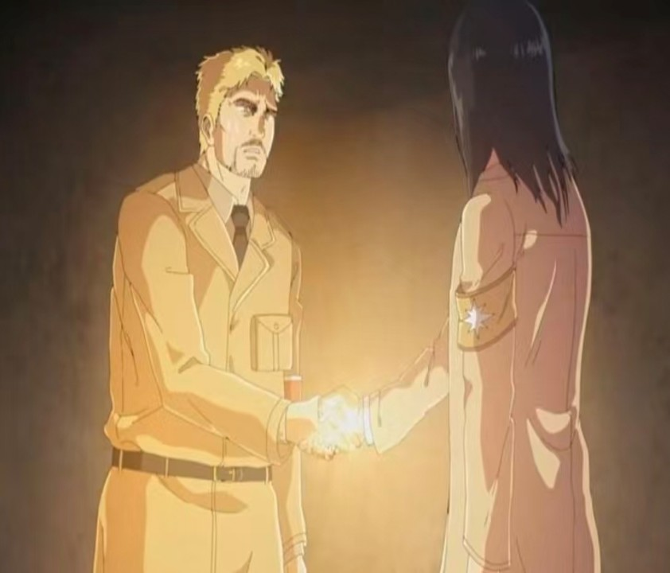
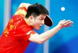
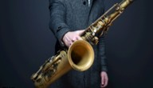
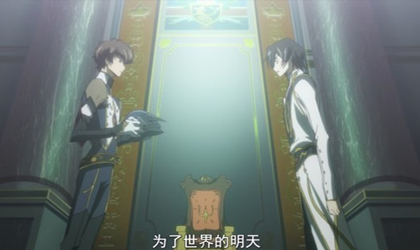
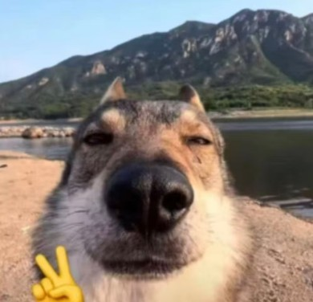

运动感
乒乓球、游泳、篮球让身体保持节奏，也训练反应和专注。
A. MY STRENGTH
原 PPT 的「特长」被重组成三个清楚模块，适合展示给同学、老师或社团伙伴快速浏览。
乒乓球、游泳、篮球让身体保持节奏，也训练反应和专注。
萨克斯让生活多一点旋律，练习时也磨出耐心与稳定。
愿意在新环境里主动沟通、参与活动，慢慢建立自己的位置。
B. HOBBIES

动漫、运动和音乐分别对应想象力、竞技感与节奏感，也让新生活更有层次。




C. FUTURE PLAN
先建立学习节奏，让每一门课都有可以回顾的脉络。
在合作中认识更多同学，也培养可靠、能交付的习惯。
把身体和心态调整好，才能更享受大学生活。
MATERIALS
